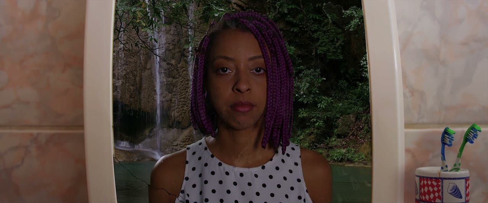
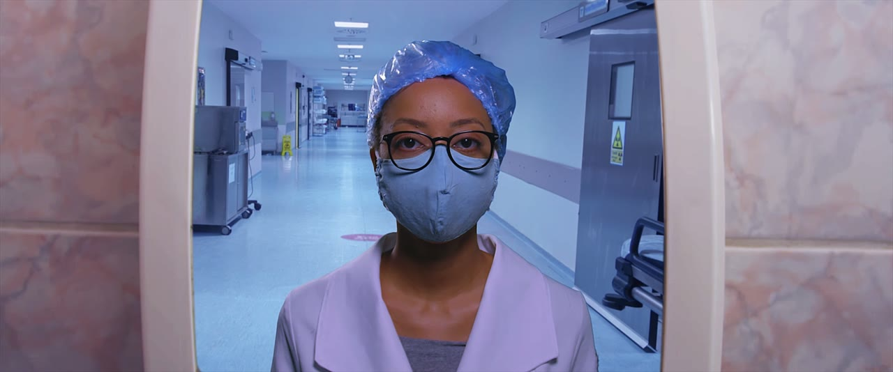
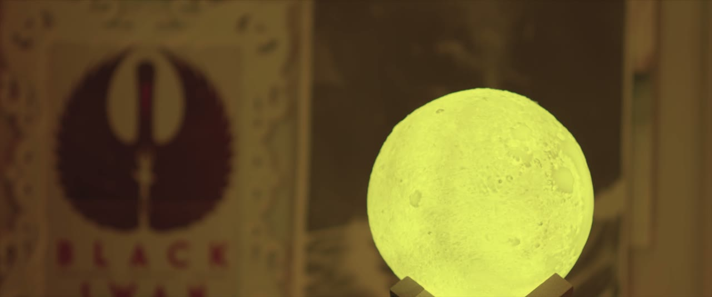
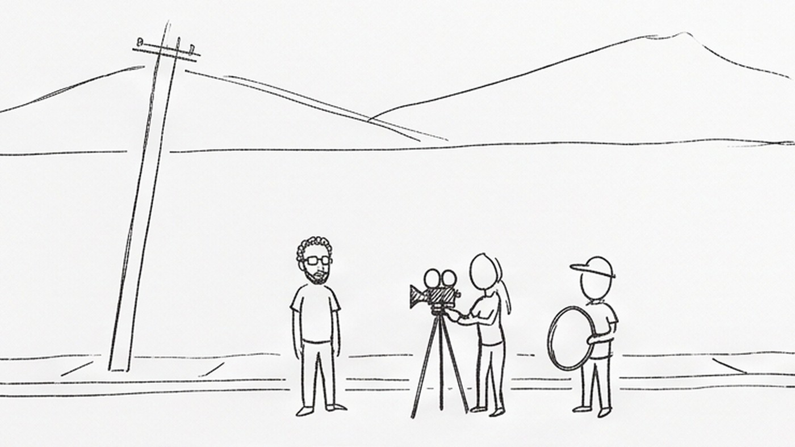
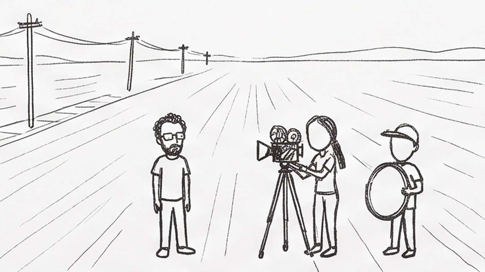
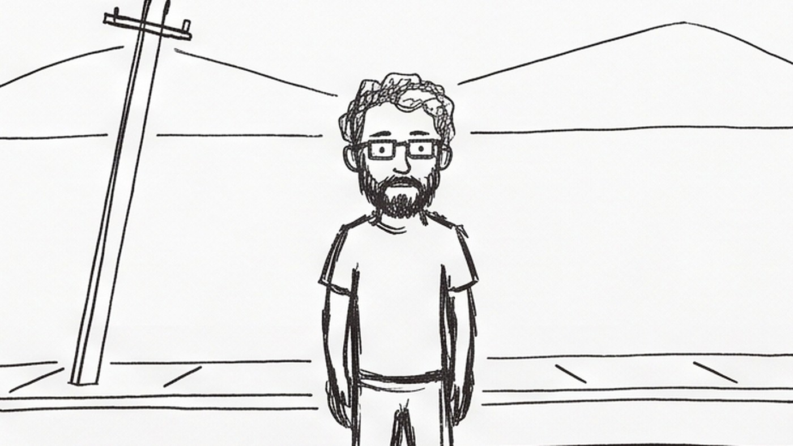
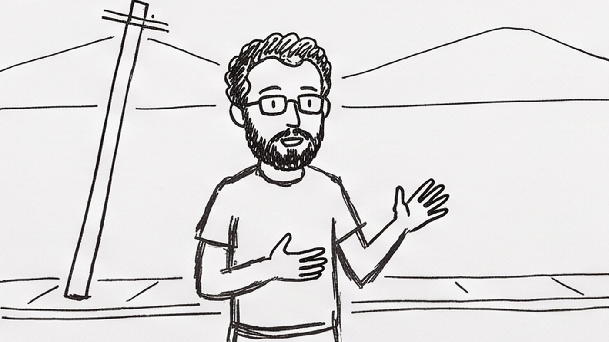
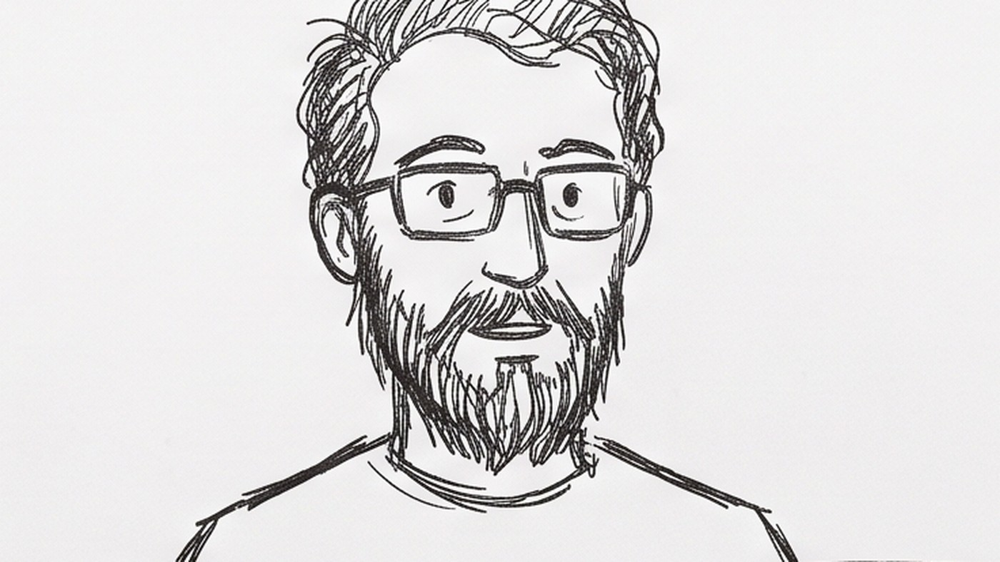
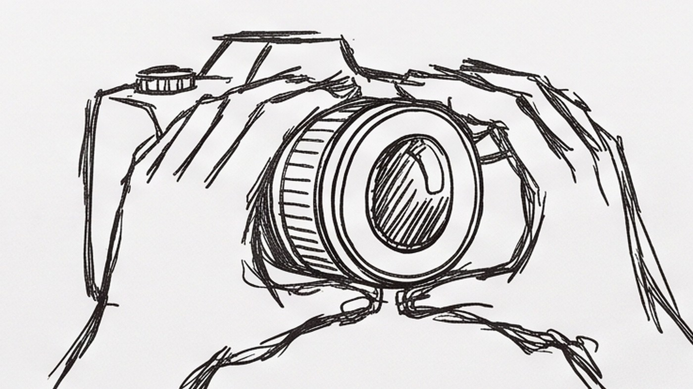

O FILME EXISTE
ANTES DA CÂMERA
Nesta aula não teve equipamento, e foi de propósito. O assunto é a parte do cinema que acontece no papel, e que decide tudo o que vem depois.
O QUE ESSE ROSTO ESTÁ SENTINDO?



O ROSTO NÃO MUDOU NADA
O SENTIDO NÃO ESTÁ
DENTRO DO PLANO
ROTEIRO NÃO É
O QUE SE FALA
COM FALAS Personagem diz isso, o outro responde aquilo. Se fosse só isso, rádio e cinema seriam a mesma coisa.
QUE SE VÊ
E SE OUVE Só entra no roteiro o que a câmera consegue filmar e o microfone consegue pegar. Se está escrito "ela lembra da mãe", não é roteiro ainda. Vira roteiro quando você decide o que aparece na tela nesse instante.
DECUPAGEM É A MONTAGEM
DECIDIDA ANTES
Você pega a cena escrita e quebra em planos, um por linha. Quando acaba, você já sabe exatamente quantos planos tem que filmar, e nenhum a mais. É a lista de compras do filme.
OS MESMOS OITO PLANOS,
DUAS ORDENS
A gente já sabe quem é antes de saber onde está. O lugar vira contexto de uma pessoa.
A gente passa o filme inteiro no lugar e só no fim descobre quem carregava aquilo. A pessoa vira revelação.
ANDRÉ RIOS
EFEITOS ESPECIAIS
Se tem uma pessoa que não pode chegar no set sem saber exatamente o que vai filmar, é quem faz efeito. Um plano com efeito mal planejado não tem conserto depois.
OS SEIS TAMANHOS DE PLANO






Cuidado pra não confundir: seis é quantos tamanhos existem. Daqui a pouco eu vou pedir oito planos, que é outra coisa: é quantos planos vocês vão escrever. Dá pra repetir tamanho, e quase sempre repete. O que não pode é usar um tamanho só nos oito, porque aí você escreveu o mesmo plano oito vezes.
UM MINUTO
SOBRE O MEU LUGAR
- 01UM LUGAR SÓ A rua, o portão, a cozinha, o ponto de ônibus. Um lugar que diga alguma coisa sobre você. Um só.
- 02OITO PLANOS Escritos na ficha de quatro colunas. Nem sete, nem doze. Oito é a quantidade de planos, não tem nada a ver com os seis tamanhos: pode ter três PP entre os oito.
- 03UM ROSTO E UM DETALHE Entre os oito, um tem que ser um rosto e outro tem que ser um detalhe bem perto. Os outros seis são livres.
- 04E SE COMEÇASSE POR OUTRO? No fim da folha, escolham um dos oito pra ser o primeiro no lugar do plano 1. Escrevam qual, e uma frase dizendo o que muda no filme com essa troca.
Sexta a gente filma exatamente o que estiver escrito aí. O que não estiver na folha não vai ser filmado.
NO PAPEL
A GENTE FILMA
O QUE VOCÊS
ESCREVERAM HOJE
Levem a folha. Sem ela não tem o que filmar. E reparem no que vai acontecer: alguma coisa que está escrita não vai funcionar na hora. Isso acontece com todo mundo, inclusive comigo, e é exatamente por isso que a gente escreve antes.